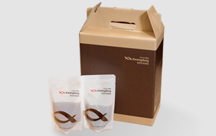
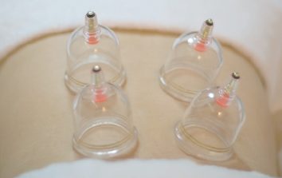

心に積もっている気病みを解消する
廣東の気病み治療システム
五行/韓方治療
鍼治療
緊張及びストレスを和らげて心を 安定させるために頭、首、 肩などに鍼治療を行います。
薬鍼治療
厳選した材料の韓方薬から抽出された 薬鍼治療は 気病みを和らげて 心を安定します。

韓方薬の処方
患者の体質や発病原因に合わせて処方 した韓方薬で症状緩和と 心理的安定に役立ちます。

カッピング
気の循環を円滑にして、 「水昇火降」やリラックスができる ようにします。
マニュアルセラピー治療
ストレスによって固まった筋肉を ほぐしてくれますし、身体バランスの 矯正の効果もあります。